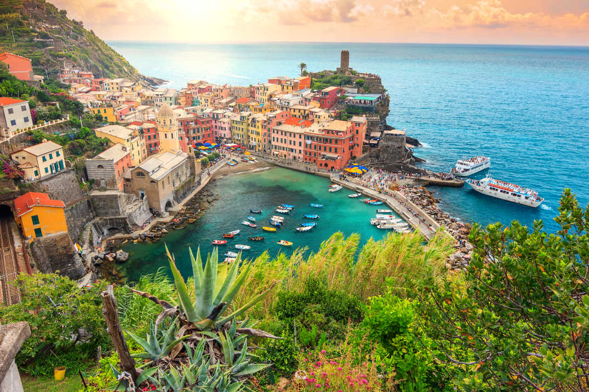

Cinque Terre, un sit al Patrimoniului Mondial UNESCO, este o regiune pitorească situată pe coasta regiunii Liguria din Italia. Compusă din cinci sate fermecătoare - Monterosso al Mare, Vernazza, Corniglia, Manarola și Riomaggiore - Cinque Terre este renumită pentru peisajele sale uluitoare, casele colorate și patrimoniul cultural unic. Acest eseu explorează istoria, frumusețea naturală și semnificația culturală a Cinque Terre, evidențiind atracția sa ca destinație turistică de top.
Cinque Terre, însemnând "Cinci Teritorii", cuprinde cele cinci sate Monterosso al Mare, Vernazza, Corniglia, Manarola și Riomaggiore, fiecare având propriul său caracter distinct și istorie.
Satele din Cinque Terre au origini antice, datând din perioada romană și medievală. Amplasate precar pe stânci abrupte ce domină Marea Ligurică, aceste așezări erau cândva comunități izolate de pescari și agricultori.
Terenul accidentat al Cinque Terre a pus provocări pentru agricultură, conducând la construirea livezilor pe terase susținute de ziduri de piatră uscată vechi de secole. Aceste terase, sculptate meticulos în versanți, nu numai că formează un peisaj vizual uimitor, ci și produc vinurile renumite ale regiunii, inclusiv Sciacchetrà și Cinque Terre DOC.
La punctul cel mai nordic al Cinque Terre se află Capul Punta Mesco, un promontoriu stâncos care oferă vederi panoramice asupra coastei și dealurilor înconjurătoare. Vizitatorii pot face drumeții până la cap din Monterosso sau pur și simplu se pot bucura de peisaj de la unul dintre punctele de vedere din apropiere.

Bucătăria din Cinque Terre reflectă locația sa de pe coastă și tradițiile agricole, cu accent pe fructe de mare proaspete, pesto, ulei de măsline și vinuri locale. Vizitatorii pot degusta preparate tradiționale liguriene la trattorii de pe malul mării și osterii de familie, savurând aromele patrimoniului culinar al regiunii.